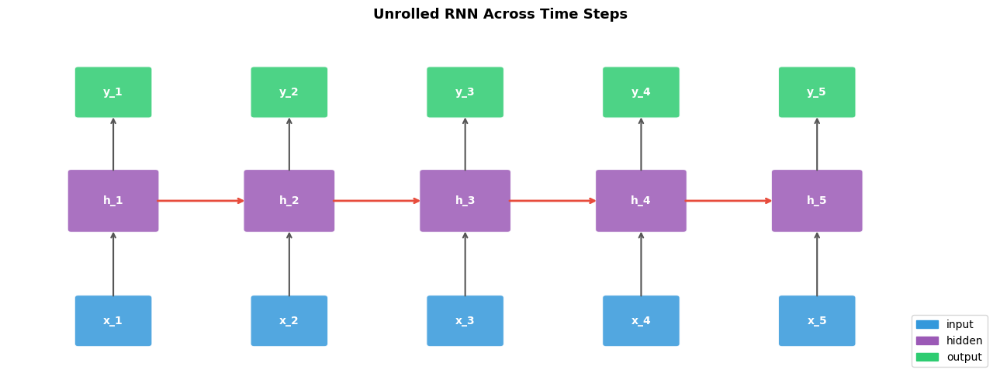
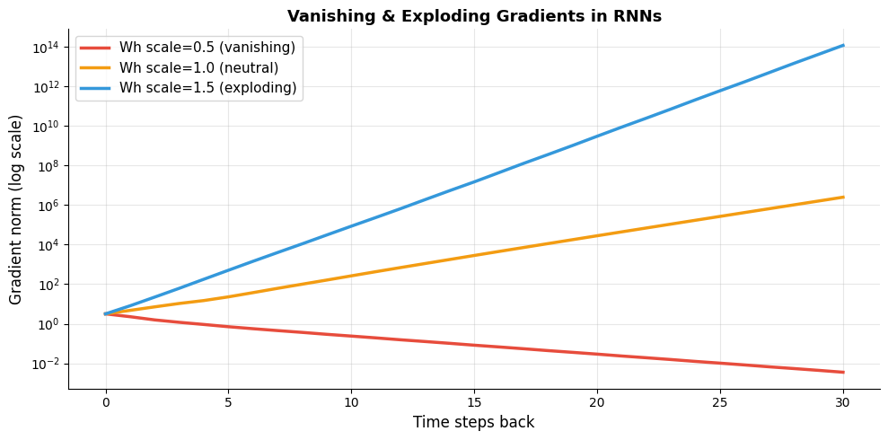
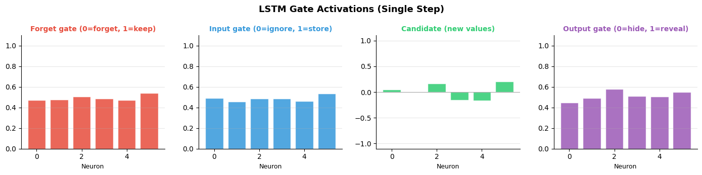
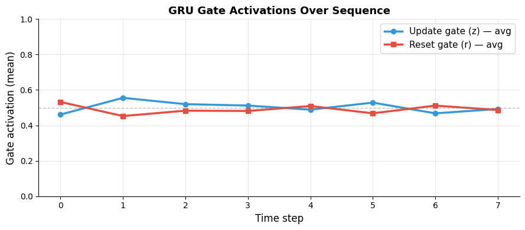

How do networks handle sequences?#
Topics: RNNs · Vanishing Gradient Problem · LSTMs · GRUs · When to Use Each
1. Recurrent Neural Networks (RNNs)#
What it is#
Neural network designed for sequential data — processes one element at a time
Maintains a hidden state that carries information from previous steps
h_t = tanh(W_h · h_{t-1} + W_x · x_t + b)
Key intuition#
Like reading a sentence word by word — hidden state = memory of what was read so far
Same weights used at every time step (weight sharing)
Output at each step depends on all previous inputs
When to use#
Sequential data: text, time series, audio
Variable-length inputs
When order matters
When not to use#
Very long sequences → vanishing gradient → use LSTM/GRU
Parallelization needed → use Transformer (RNNs are sequential)
import numpy as np
import matplotlib.pyplot as plt
import matplotlib.patches as mpatches
# ── RNN from scratch ──
def rnn_step(x, h_prev, Wx, Wh, b):
return np.tanh(Wx @ x + Wh @ h_prev + b)
np.random.seed(42)
input_size, hidden_size, seq_len = 3, 5, 6
Wx = np.random.randn(hidden_size, input_size) * 0.1
Wh = np.random.randn(hidden_size, hidden_size) * 0.1
b = np.zeros(hidden_size)
X = np.random.randn(seq_len, input_size)
h = np.zeros(hidden_size)
hidden_states = []
for t in range(seq_len):
h = rnn_step(X[t], h, Wx, Wh, b)
hidden_states.append(h.copy())
hidden_states = np.array(hidden_states)
# ── Unrolled RNN diagram ──
fig, ax = plt.subplots(figsize=(13, 5))
ax.set_xlim(0, 14); ax.set_ylim(0, 6); ax.axis('off')
ax.set_title('Unrolled RNN Across Time Steps', fontsize=13, fontweight='bold', pad=10)
colors = {'input': '#3498DB', 'hidden': '#9B59B6', 'output': '#2ECC71'}
T = 5
for t in range(T):
x_pos = 1.5 + t * 2.5
# Input
rect_in = mpatches.FancyBboxPatch((x_pos-0.5, 0.5), 1, 0.8,
boxstyle='round,pad=0.05', facecolor=colors['input'], alpha=0.85, edgecolor='white')
ax.add_patch(rect_in)
ax.text(x_pos, 0.9, f'x_{t+1}', ha='center', va='center', fontsize=10,
color='white', fontweight='bold')
# Hidden
rect_h = mpatches.FancyBboxPatch((x_pos-0.6, 2.5), 1.2, 1.0,
boxstyle='round,pad=0.05', facecolor=colors['hidden'], alpha=0.85, edgecolor='white')
ax.add_patch(rect_h)
ax.text(x_pos, 3.0, f'h_{t+1}', ha='center', va='center', fontsize=10,
color='white', fontweight='bold')
# Output
rect_out = mpatches.FancyBboxPatch((x_pos-0.5, 4.5), 1, 0.8,
boxstyle='round,pad=0.05', facecolor=colors['output'], alpha=0.85, edgecolor='white')
ax.add_patch(rect_out)
ax.text(x_pos, 4.9, f'y_{t+1}', ha='center', va='center', fontsize=10,
color='white', fontweight='bold')
# Arrows: input → hidden, hidden → output
ax.annotate('', xy=(x_pos, 2.5), xytext=(x_pos, 1.3),
arrowprops=dict(arrowstyle='->', color='#555', lw=1.5))
ax.annotate('', xy=(x_pos, 4.5), xytext=(x_pos, 3.5),
arrowprops=dict(arrowstyle='->', color='#555', lw=1.5))
# Hidden → next hidden
if t < T - 1:
ax.annotate('', xy=(x_pos+1.9, 3.0), xytext=(x_pos+0.6, 3.0),
arrowprops=dict(arrowstyle='->', color='#E74C3C', lw=2))
legend = [mpatches.Patch(color=c, label=l) for l, c in colors.items()]
ax.legend(handles=legend, loc='lower right', fontsize=10)
plt.tight_layout()
plt.savefig('rnn_unrolled.png', dpi=120, bbox_inches='tight')
plt.show()
print(f"Hidden states shape: {hidden_states.shape} (seq_len x hidden_size)")

Hidden states shape: (6, 5) (seq_len x hidden_size)
2. Vanishing Gradient Problem#
What it is#
Gradients shrink exponentially as they propagate backward through time steps
Weights in early time steps receive near-zero gradients → stop learning
Makes RNNs unable to learn long-range dependencies
Key intuition#
At each step, gradient is multiplied by Wh and tanh derivative (< 1)
After many steps: gradient ≈ (small number)^T ≈ 0
Network forgets information from many steps ago
import numpy as np
import matplotlib.pyplot as plt
np.random.seed(42)
def compute_gradient_norms(seq_len, Wh_scale):
Wh = np.random.randn(10, 10) * Wh_scale
grad = np.eye(10)
norms = [np.linalg.norm(grad)]
for _ in range(seq_len):
grad = grad @ Wh * 0.5 # tanh derivative ≈ 0.5
norms.append(np.linalg.norm(grad))
return norms
steps = 30
fig, ax = plt.subplots(figsize=(10, 5))
configs = [
(0.5, '#E74C3C', 'Wh scale=0.5 (vanishing)'),
(1.0, '#F39C12', 'Wh scale=1.0 (neutral)'),
(1.5, '#3498DB', 'Wh scale=1.5 (exploding)'),
]
for scale, color, label in configs:
norms = compute_gradient_norms(steps, scale)
ax.semilogy(norms, color=color, linewidth=2.5, label=label)
ax.set_xlabel('Time steps back', fontsize=12)
ax.set_ylabel('Gradient norm (log scale)', fontsize=12)
ax.set_title('Vanishing & Exploding Gradients in RNNs', fontsize=13, fontweight='bold')
ax.legend(fontsize=11)
ax.grid(True, alpha=0.3)
ax.spines['top'].set_visible(False)
ax.spines['right'].set_visible(False)
plt.tight_layout()
plt.savefig('vanishing_gradient.png', dpi=120, bbox_inches='tight')
plt.show()

3. LSTM (Long Short-Term Memory)#
What it is#
RNN variant designed to learn long-range dependencies
Maintains two states: hidden state (h) and cell state (c)
Uses gates to control what information to keep, forget, and output
Gates#
Gate |
Formula |
Purpose |
|---|---|---|
Forget gate |
f = σ(Wf·[h,x] + b) |
How much of cell state to forget |
Input gate |
i = σ(Wi·[h,x] + b) |
What new info to store |
Candidate |
g = tanh(Wg·[h,x] + b) |
New candidate values |
Output gate |
o = σ(Wo·[h,x] + b) |
What to output from cell state |
Key intuition#
Cell state = long-term memory (highway for gradients)
Hidden state = short-term working memory
Gates learn when to remember and when to forget
import numpy as np
import matplotlib.pyplot as plt
import matplotlib.patches as mpatches
def sigmoid(x): return 1 / (1 + np.exp(-x))
def lstm_step(x, h_prev, c_prev, W, b):
combined = np.concatenate([h_prev, x])
gates = W @ combined + b
n = len(gates) // 4
f = sigmoid(gates[:n]) # forget gate
i = sigmoid(gates[n:2*n]) # input gate
g = np.tanh(gates[2*n:3*n]) # candidate
o = sigmoid(gates[3*n:]) # output gate
c = f * c_prev + i * g # cell state update
h = o * np.tanh(c) # hidden state
return h, c, {'f': f, 'i': i, 'g': g, 'o': o}
np.random.seed(42)
input_size, hidden_size = 4, 6
W = np.random.randn(4*hidden_size, hidden_size + input_size) * 0.1
b = np.zeros(4 * hidden_size)
x = np.random.randn(input_size)
h, c = np.zeros(hidden_size), np.zeros(hidden_size)
h, c, gates = lstm_step(x, h, c, W, b)
# Plot gate values
fig, axes = plt.subplots(1, 4, figsize=(14, 3.5))
gate_colors = {'f': '#E74C3C', 'i': '#3498DB', 'g': '#2ECC71', 'o': '#9B59B6'}
gate_names = {'f': 'Forget gate (0=forget, 1=keep)',
'i': 'Input gate (0=ignore, 1=store)',
'g': 'Candidate (new values)',
'o': 'Output gate (0=hide, 1=reveal)'}
for ax, (key, color) in zip(axes, gate_colors.items()):
vals = gates[key]
bars = ax.bar(range(len(vals)), vals, color=color, alpha=0.85, edgecolor='white')
ax.set_title(gate_names[key], fontsize=10, fontweight='bold', color=color)
ax.set_xlabel('Neuron', fontsize=9)
ax.set_ylim(-1.1 if key == 'g' else 0, 1.1)
ax.axhline(0, color='gray', linewidth=0.5)
ax.grid(True, alpha=0.3, axis='y')
ax.spines['top'].set_visible(False)
ax.spines['right'].set_visible(False)
plt.suptitle('LSTM Gate Activations (Single Step)', fontsize=13, fontweight='bold')
plt.tight_layout()
plt.savefig('lstm_gates.png', dpi=120, bbox_inches='tight')
plt.show()

Interview Q&A#
How does LSTM solve the vanishing gradient?
Cell state provides a direct gradient highway across time steps
Forget gate can be set to 1 → gradient flows backward unchanged (no shrinking)
Addition operation (not multiplication) in cell state update preserves gradient magnitude
LSTM vs GRU?
GRU has 2 gates vs LSTM’s 4 → fewer parameters, faster training
LSTM has separate cell and hidden state → more memory capacity
In practice: similar performance, GRU preferred for smaller datasets/faster training
Gotchas#
LSTMs still struggle with very long sequences (1000+ steps) — use Transformers instead
Initialize forget gate bias to 1.0 → network defaults to remembering → faster learning
Bidirectional LSTM sees sequence in both directions → better for NLP tasks
4. GRU (Gated Recurrent Unit)#
What it is#
Simplified LSTM with 2 gates instead of 4
Combines forget and input gates into a single update gate
No separate cell state — single hidden state
Gates#
Gate |
Purpose |
|---|---|
Reset gate (r) |
How much past hidden state to forget |
Update gate (z) |
How much of past state to carry vs new candidate |
Key intuition#
Update gate = combined forget + input gate
When z ≈ 1 → keep past state (like LSTM with forget=1, input=0)
When z ≈ 0 → replace with new candidate (like LSTM with forget=0, input=1)
When to use GRU over LSTM#
Smaller datasets — fewer parameters, less overfitting
Faster training needed
Sequence length is moderate (< 500 steps)
import numpy as np
import matplotlib.pyplot as plt
def sigmoid(x): return 1 / (1 + np.exp(-x))
def gru_step(x, h_prev, Wz, Wr, Wh, bz, br, bh):
z = sigmoid(Wz @ np.concatenate([h_prev, x]) + bz) # update gate
r = sigmoid(Wr @ np.concatenate([h_prev, x]) + br) # reset gate
h_candidate = np.tanh(Wh @ np.concatenate([r*h_prev, x]) + bh)
h = (1 - z) * h_prev + z * h_candidate
return h, z, r
np.random.seed(42)
hs, xs = 5, 4
Wz = np.random.randn(hs, hs+xs) * 0.1
Wr = np.random.randn(hs, hs+xs) * 0.1
Wh = np.random.randn(hs, hs+xs) * 0.1
seq = np.random.randn(8, xs)
h = np.zeros(hs)
z_history, r_history = [], []
for x in seq:
h, z, r = gru_step(x, h, Wz, Wr, Wh, np.zeros(hs), np.zeros(hs), np.zeros(hs))
z_history.append(z.mean())
r_history.append(r.mean())
fig, ax = plt.subplots(figsize=(9, 4))
ax.plot(z_history, color='#3498DB', linewidth=2.5, marker='o', markersize=6, label='Update gate (z) — avg')
ax.plot(r_history, color='#E74C3C', linewidth=2.5, marker='s', markersize=6, label='Reset gate (r) — avg')
ax.axhline(0.5, color='gray', linewidth=1, linestyle='--', alpha=0.5)
ax.set_xlabel('Time step', fontsize=12)
ax.set_ylabel('Gate activation (mean)', fontsize=12)
ax.set_title('GRU Gate Activations Over Sequence', fontsize=13, fontweight='bold')
ax.set_ylim(0, 1)
ax.legend(fontsize=11)
ax.grid(True, alpha=0.3)
ax.spines['top'].set_visible(False)
ax.spines['right'].set_visible(False)
plt.tight_layout()
plt.savefig('gru_gates.png', dpi=120, bbox_inches='tight')
plt.show()
print("Parameter comparison:")
print(f" RNN params (hs={hs}, xs={xs}): {hs*(hs+xs) + hs}")
print(f" GRU params (hs={hs}, xs={xs}): {3*hs*(hs+xs) + 3*hs}")
print(f" LSTM params (hs={hs}, xs={xs}): {4*hs*(hs+xs) + 4*hs}")

Parameter comparison:
RNN params (hs=5, xs=4): 50
GRU params (hs=5, xs=4): 150
LSTM params (hs=5, xs=4): 200
Interview Q&A#
GRU vs LSTM — which to choose?
GRU → faster, fewer params, works well on smaller datasets or shorter sequences
LSTM → more expressive, better for tasks requiring fine-grained memory control
Try GRU first, switch to LSTM if performance is insufficient
When should you use Transformers instead of LSTMs/GRUs?
Long sequences (> 500 steps) — attention handles them better
When parallelization matters — RNNs/GRUs are sequential, Transformers fully parallel
NLP tasks — pre-trained Transformers (BERT, GPT) almost always win
Gotchas#
Stack multiple RNN/LSTM/GRU layers for more capacity — use
num_layersin PyTorchAlways use
pack_padded_sequencefor variable-length sequences in PyTorch — avoids computing on paddingBidirectional doubles hidden size — account for this in subsequent layers